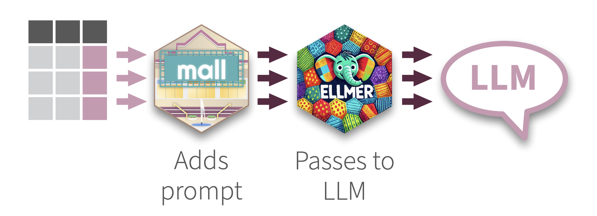
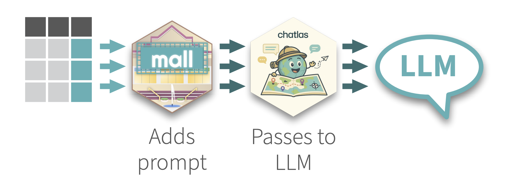

Download PDF
Natural Language Processing using LLMs in R & Python :: Cheatsheet
Click on R or the Python tab to see the information in your preferred language
Intro
Use LLM’s to perform NLP row-wise over a data frame. mall comes with pre-defined prompts that perform specific NLP operations, and then places the results in a new column. Use OpenAI, Ollama, Anthropic and many others thanks to its integration with ellmer
mall’s data frame functions are designed with ‘tidy’ principals in mind, so they work with the Tidyverse packages. mall also includes functions that work with string vectors.

Use LLM’s to perform NLP row-wise over a data frame. mall comes with pre-defined prompts that perform specific NLP operations, and then places the results in a new column. Use OpenAI, Ollama, Anthropic and many others thanks to its integration with chatlas
mall works as an extension for Polars data frames. It also works with string vectors.

Getting started
Load the libraries
library(mall) library(ellmer)Create a vendor specific chat connection
chat <- chat_openai()Pass the chat object to mall
llm_use(chat)
For dataframes:
data(“reviews") # Sample product reviews reviews |> llm_sentiment(review)For vectors:
llm_vec_sentiment(c("I am happy", "I am sad”))
Connect automatically
As a convenience, mall is able to automatically establish a connection with the LLM. To do this you can use the .mall_chat option: options(.mall_chat=ellmer::chat_openai(model="gpt-4o")) Add this line to your .Rprofile file in order for that code to run every time you start R. You can call usethis::edit_r_profile() to edit.
Start by creating a new LLM connection
from chatlas import ChatOpenAI
chat = ChatOpenAI()For Dataframes
Load the library
import mallRead or load your data frame
reviews = mall.MallData.reviews # Sample product reviewsPass the chat object to mall
reviews.llm.use(chat)Access NLP functions via
.llmreviews.llm.sentiment('review')
For String vectors
Load the LLMVec class
from mall import LLMVecCreate a new LLMVec object
llm = LLMVec(chat)Pass a vector to a function in the new object
llm.sentiment(['I am happy', 'I am sad'])
NLP functions
Sentiment analysis
llm_sentiment(.data, col, options = c("positive", "negative", “neutral"), pred_name = “.sentiment", additional_prompt = “”)llm_sentiment(reviews, review)llm_vec_sentiment(x, options = c("positive", "negative", "neutral"), additional_prompt = "", preview = FALSE)llm_vec_sentiment(c("I am happy", "I am sad"))
Special arguments:
options: Customize the sentiments to check for: options = c(“positive”, “negative”). Use ‘tilde’ to mask the results, for example c("positive" ~ 1, "negative" ~ 0)) returns 1 for positive and 0 for negative.
<Dataframe>
.llm.sentiment(col, options = ['positive', 'negative', 'neutral'], additional='', pred_name ='sentiment')reviews.llm.sentiment('review')<LLMVec object>
.sentiment(x, options=['positive', 'negative', 'neutral'], additional='')llm.sentiment(['I am happy', 'I am sad'])
Special arguments:
options: Customize the sentiments to check for: options = ["positive", "negative"]. Use a DICT object to mask the results, for example {"positive": 1, "negative" 0} returns 1 for positive and 0 for negative.
Extract
Extract specific entity, or entities, from the provided text
llm_extract(.data, col, labels, expand_cols = FALSE, additional_prompt = "", pred_name = “.extract")llm_extract(reviews, review, labels = "product")llm_vec_extract(x, labels = c(), additional_prompt = "", preview = FALSE)llm_vec_extract("bob smith, 123 3rd street", c("name", "address"))
Special arguments
labels: A vector to specify the entities to identify expand_cols - If multiple labels, this indicates if the labels will show up in their own column (data frames only)
<DataFrame>
.llm.extract(col, labels='', expand_cols = False, additional = '', pred_name = 'extract')reviews.llm.extract("review", labels = "product")<LLMVec object>
.extract(x, labels='', additional='')llm.extract(['bob smith, 123 3rd street'], labels=['name', 'address'])
Special arguments
labels: A vector to specify the entities to identify expand_cols - If multiple labels, this indicates if the labels will show up in their own column (data frames only)
Summarize
Summarize text into a specified number of words
llm_summarize( .data, col, max_words = 10, pred_name = ".summary", additional_prompt = "")llm_summarize(reviews, review, max_words = 5)llm_vec_summarize(x, max_words = 10, additional_prompt = "", preview = FALSE)llm_vec_summarize("This has been the best TV I've ever used. Great screen, and sound.", max_words = 5)
<DataFrame>
.llm.summarize(x, max_words=10, additional='')reviews.llm.summarize("review", 5)<LLMVec object>
.summarize(x, max_words=10, additional='')llm.summarize(['This has been the best TV Ive ever used. Great screen, and sound.'], max_words = 5)
Verify
Check if a statement is true or not based on the provided text
llm_verify(.data, col, what, yes_no = factor(c(1, 0)), pred_name = ".verify", additional_prompt = "")llm_verify(reviews, review, "is the customer happy")llm_vec_verify(x, what, yes_no = factor(c(1, 0)), additional_prompt = “", preview = FALSE)llm_verify(c("I am happy", "I am sad"), "is the person happy”)
Special arguments
yes_no: Customize what it returns for true/false with a vector yes_no = c("y", "n").
<DataFrame>
.llm.verify(col, what='', yes_no=[1, 0], additional='', pred_name='verify')reviews.llm.verify("review", "is the customer happy")<LLMVec object>
.verify(x, what='', yes_no=[1, 0], additional='')llm.verify(['I am happy', 'I am sad'], what = 'Is the person happy?')
Special arguments
yes_no: Customize what it returns for true/false with a vector yes_no = ["y", "n"].
Classify
Classify the provided text as one of the options provided via the labels
llm_classify(.data, col, labels, pred_name = ".classify", additional_prompt = "")llm_classify(reviews, review, c("appliance", "computer"))llm_vec_classify(x, labels, additional_prompt = "", preview = FALSE)llm_vec_classify(c("this is important!", "just whenever”), c("urgent", "not urgent"))
Special arguments
labels: A character vector with at least 2 labels to classify the text as
<DataFrame>
.llm.classify(col, labels='', additional='', pred_name='classify')reviews.llm.classify("review", ["appliance", "computer"])<LLMVec object>
.classify(x, labels='', additional='')llm.classify(['this is important!', 'there is no rush'], ['urgent', 'not urgent'])
Special arguments
labels: A character vector with at least 2 labels to classify the text as
Translate
Translate into target language
llm_translate( .data, col, language, pred_name = ".translation", additional_prompt = “")llm_translate(reviews, review, "spanish")llm_vec_translate(x, language, additional_prompt = "", preview = FALSE)llm_vec_translate("grass is green", "spanish")
Special arguments
language: Target language. No origin language is passed since the LLM detects it automatically.
<DataFrame>
.llm.translate(col, language='', additional='', pred_name='translation')reviews.llm.translate("review", "spanish")<LLMVec object>
.translate(x, language='', additional='')llm.translate([‘the grass is green’], language = 'spanish')
Special arguments
language: Target language. No origin language is passed since the LLM detects it automatically.
Custom
Create your own prompt
llm_custom(.data, col, prompt = "", pred_name = ".pred", valid_resps = "")my_prompt <- "Answer a question. Return only the answer, no explanation. Acceptable answers are 'yes', ‘no’. Answer this about the following text, is this a happy customer?:" llm_custom(reviews , review, my_prompt)llm_vec_custom(x, prompt = "", valid_resps = NULL)
Special arguments
valid_resps: A vector to specify the set of answers expected back. mall will change those not in the set to NA
<DataFrame>
.llm.custom(col, prompt='', valid_resps='', pred_name='custom')my_prompt = "Answer a question. Return only the answer," \ " no explanation. Acceptable answers are 'yes', 'no'." \ "Answer this about the following text, is this a happy customer?:" reviews.llm.custom("review", prompt = my_prompt)<LLMVec object>
.custom(x, prompt='', valid_resps='')
Special arguments
valid_resps: A vector to specify the set of answers expected back.
Other features
Ollama direct
If Ollama is the only LLM provider you are using, then a simplified way to connect is available which does not require an ellmer Chat object. Simply pass “ollama” as the backend, and specify the model:
llm_use("ollama", model= “llama3.2")If Ollama is the only LLM provider you are using, then a simplified way to connect is available which does not require an ellmer Chat object. Simply pass “ollama” as the backend, and specify the model:
Dataframe:
reviews.llm.use('ollama','llama3.2')Vector:
llm = LLMVec('ollama','llama3.2')
Caching results
By default, mall saves the LLM results in a temp folder. To specify a folder call:
llm_use(chat, .cache = "<my folder>")To turn off use:
llm_use(chat, .cache = "")By default, mall saves the LLM results in a folder. To specify a folder call:
Dataframe:
reviews.llm.use(chat, _cache='<my folder>')Vector:
llm = LLMVec(chat, _cache='<my folder>')
To turn off use:
Dataframe:
reviews.llm.use(chat, _cache='')Vector:
llm = LLMVec(chat, _cache='')